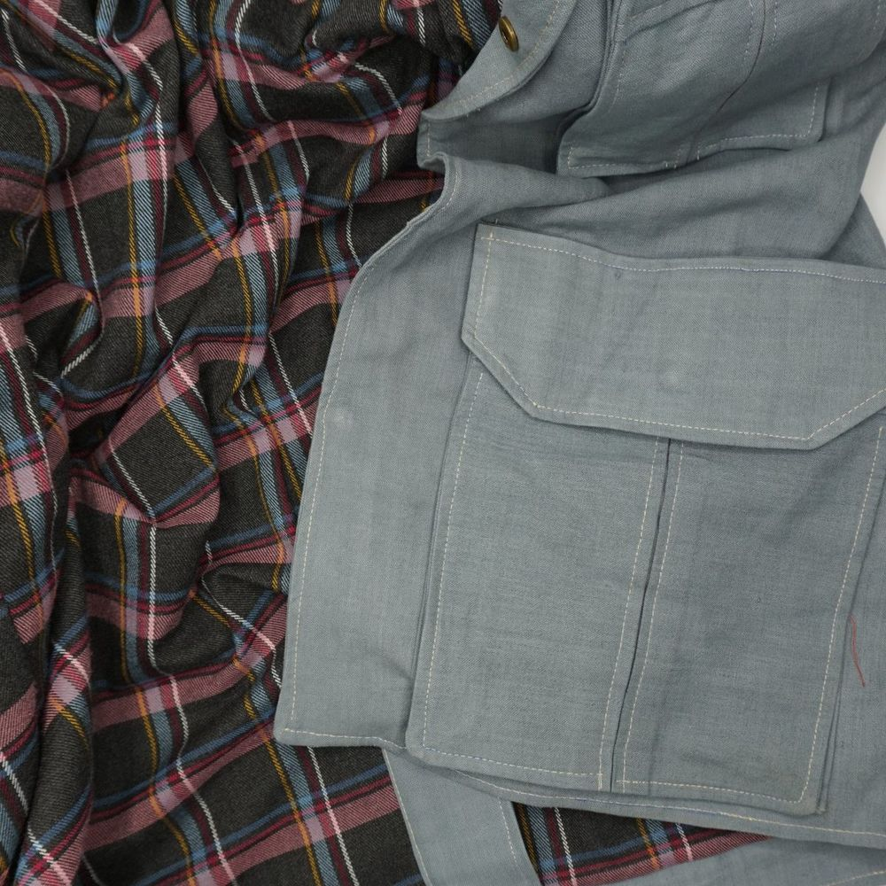

Saharienne doublée
Ce patron existe avec ou sans pièce d’épaule : choisissez-le d’abord avec la case ci-dessous. Saisissez ensuite vos mesures, choisissez les pièces et téléchargez le patron au format A4 à l'échelle 1:1, ou en une seule page pour la vidéoprojection. Tout est calculé dans votre navigateur ; aucune de vos données ne m’est envoyée.


Vous ne savez pas comment prendre une mesure ? Consultez l’onglet Guide des mesures.
Modèle
Cochée : le patron comprend une pièce d’épaule distincte (devant, dos et parementure sont alors coupés plus courts). Décochée : devant, dos et parementure sont d’une seule pièce, sans pièce d’épaule.
Mesures
Aisances
Réglages du modèle
Pièces à télécharger
Marge de couture
Étalonnage d'impression
Le PDF d’une page contient toutes les pièces à l’échelle 1:1, sans découpage en feuilles A4 : il est prévu pour être projeté sur le tissu (par exemple avec Pattern Projector). Le carré de 5 × 5 cm sert à calibrer la projection.
Pour imprimer à la bonne échelle et contrôler le carré de 5 × 5 cm, voir la page Imprimer correctement.
Calcul indépendant de Seamly2D (reprogrammé à partir d'un patron paramétrique). Faites toujours un essai en papier avant de couper le tissu.
Un problème avec un patron ? Cliquez sur « Copier mes réglages », puis collez-les dans votre message via « Donner votre avis » en bas de page. Rien n’est envoyé automatiquement. Le formulaire est anonyme : indiquez votre adresse e-mail dans votre message si vous souhaitez une réponse.